Diversity allows the exploration of all the possible behavioral paths our system can take according to the input on the sensor.
In the following, we'll build a graphical tree that represents this exploration. But at first, we will do the process "manually" in order to fully understand it.
One of the parameters for the exploration is the number of steps. This number will dictate how far (how many transition deep) the tree must be explored.
For the water system, for instance for 4 steps, the different possibilities (list of transitions that may be reached) are :
If we know how the system works, we can deduce the ranges of data needed to obtain those 4 behaviors (where the time corresponds to the order of the current transition) :
Diversity can do what we just did, automatically and for much bigger systems, with much greater number of steps.
To generate an exploration tree, we must follow the steps described in the pictures below :
"Run Configurations..." allows to parameterize our launch of the symbolic execution engine on the XLIA model :
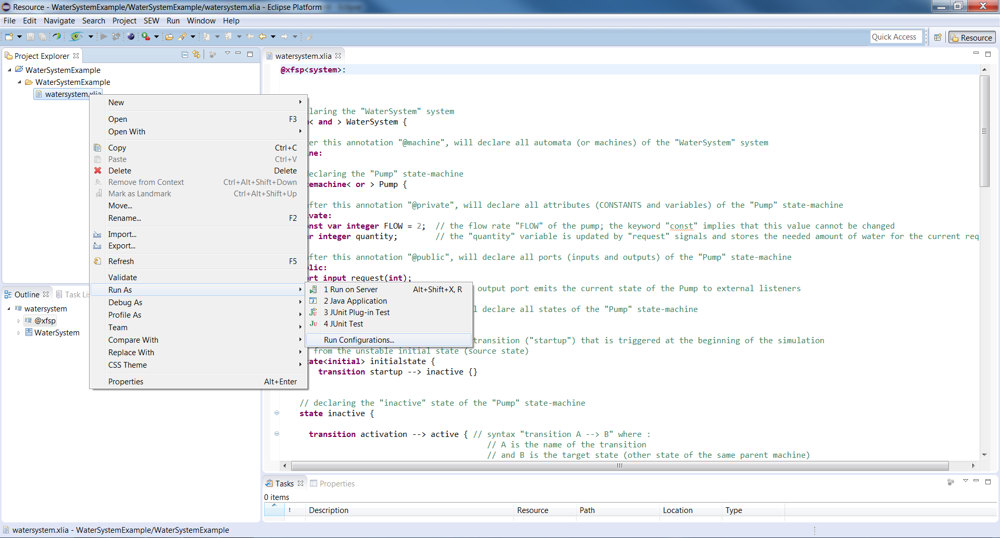We create a "New launch configuration" for a "Symbolic Execution Workflow" :
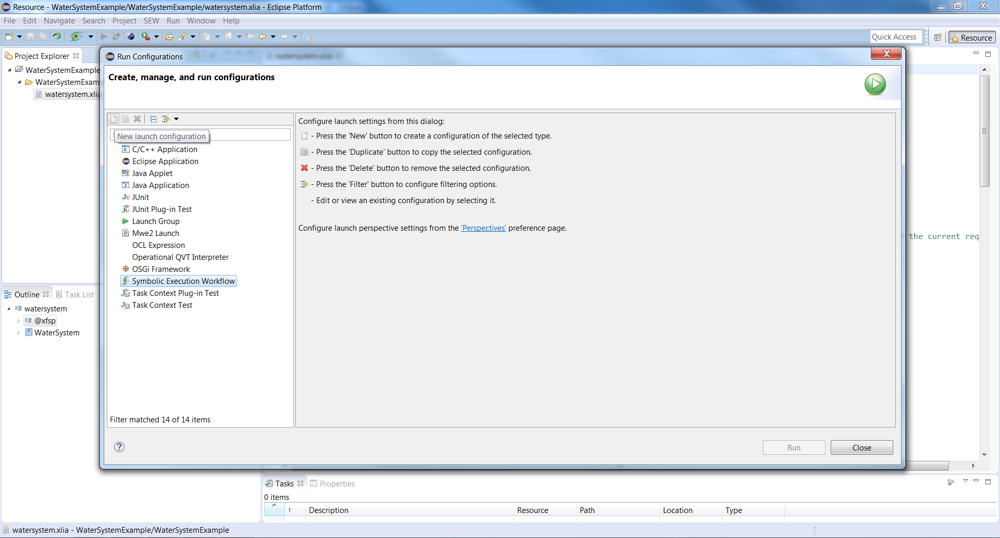The new configuration appears under the "Symbolic Execution Workflow" node :
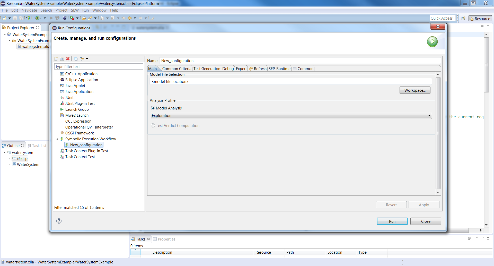We give a coherent name to the configuration, as well as the path to the corresponding .xlia file :
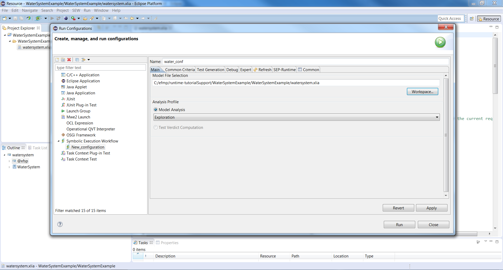In order to print easily readable results for what follows, we check-in the "Execution Graph Phase1 Generation" and "Execution Graph Phase2 Generation" on the "Debug" tab. Those will generate the graphical trees.
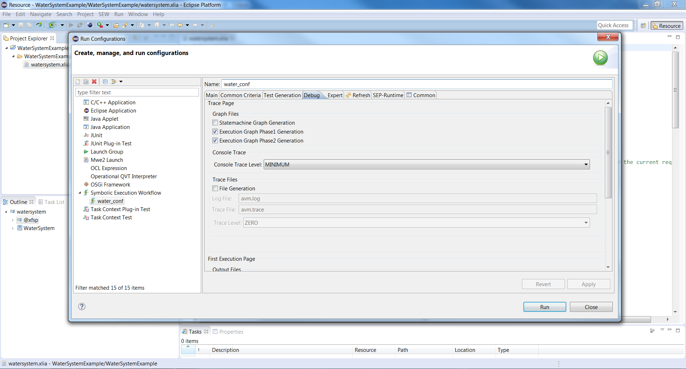We can specify the number of steps in our execution tree, on the "Common Criteria" tab :
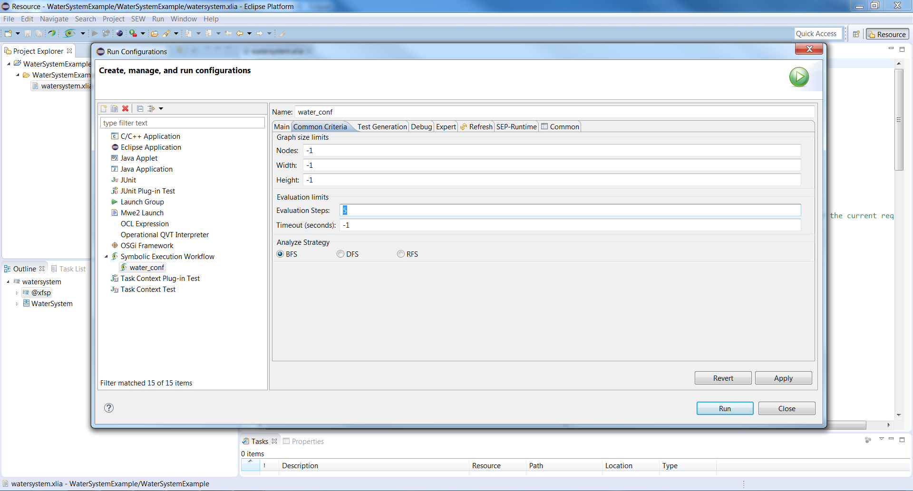After having clicked on "Apply" and "Run", the requested files are generated within the project.
We can visualize the ".gv" files with "Graph Visualization" as shown below :
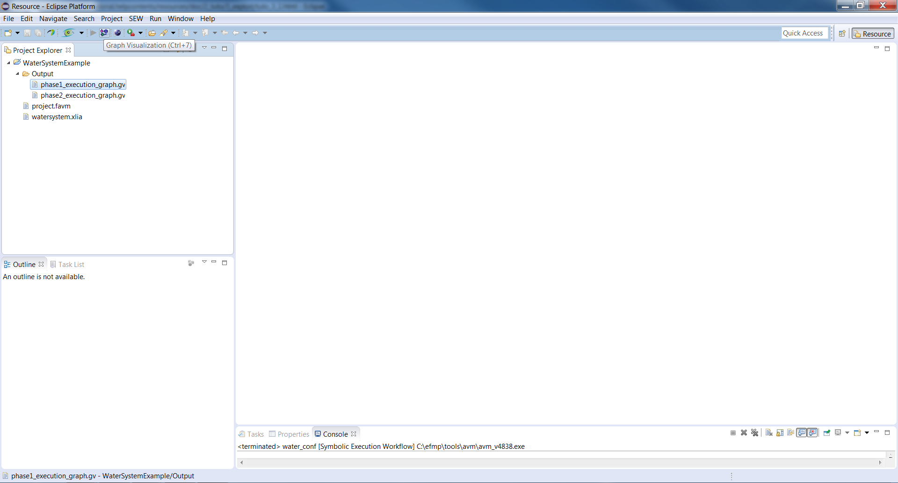Or with :
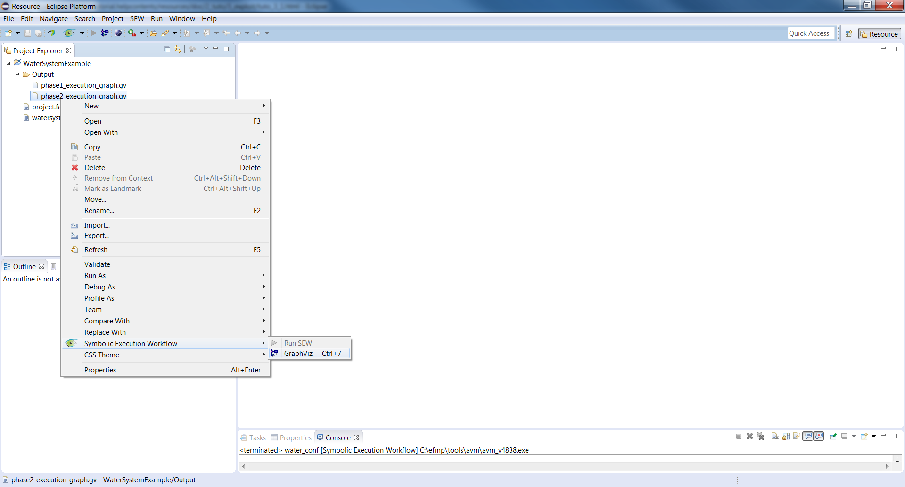The "phase1_execution_graph.gv" graph displays a detailed view of the possible sequences of states accessed by the state-machine as well as the conditions that are required to follow them :
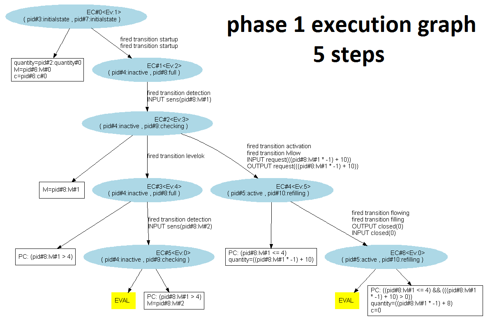The "phase2_execution_graph.gv" graph provides a more synthetic representation :
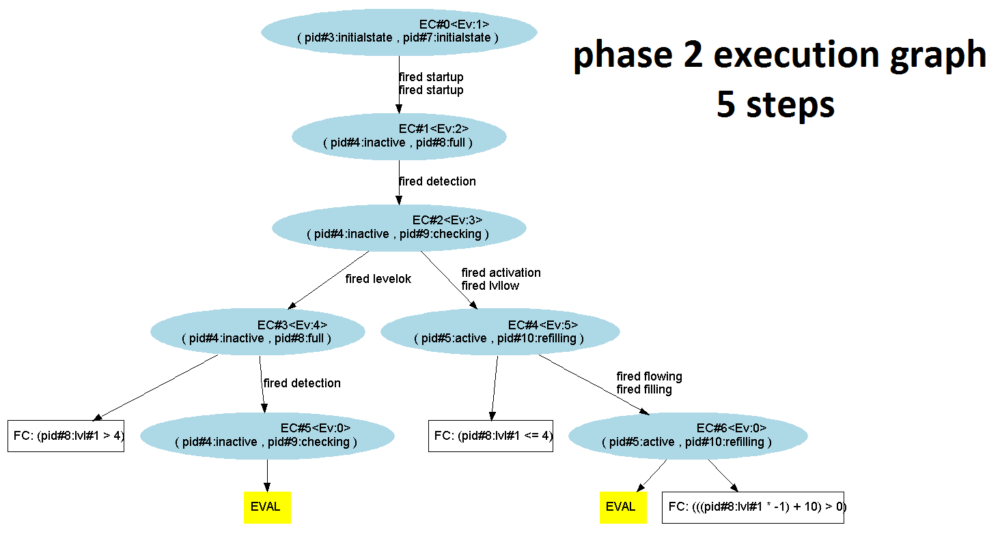By acting on the number of steps, we can go further on the exploration :
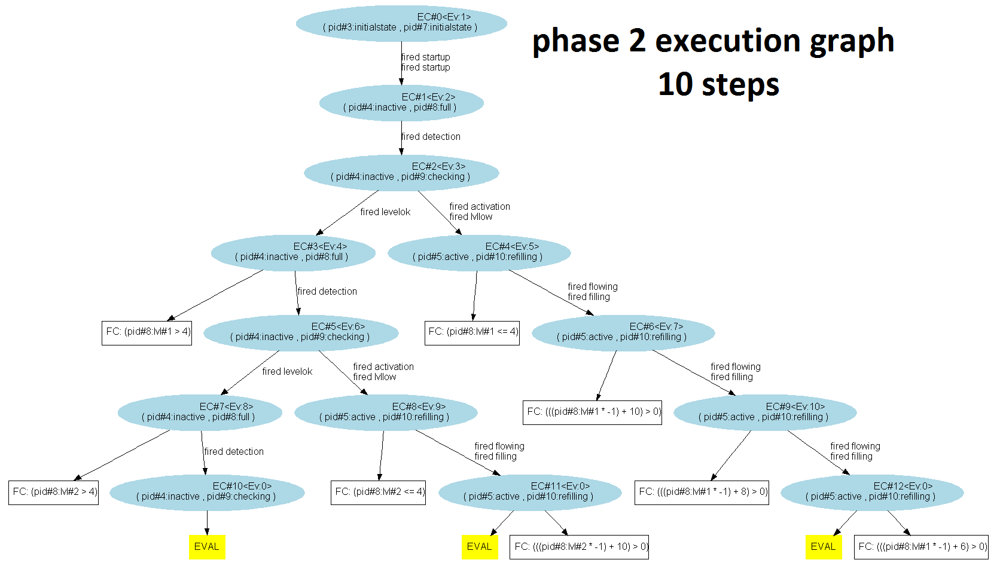With only 10 steps, we've already found 3 out of the 4 sequences that we've predicted :
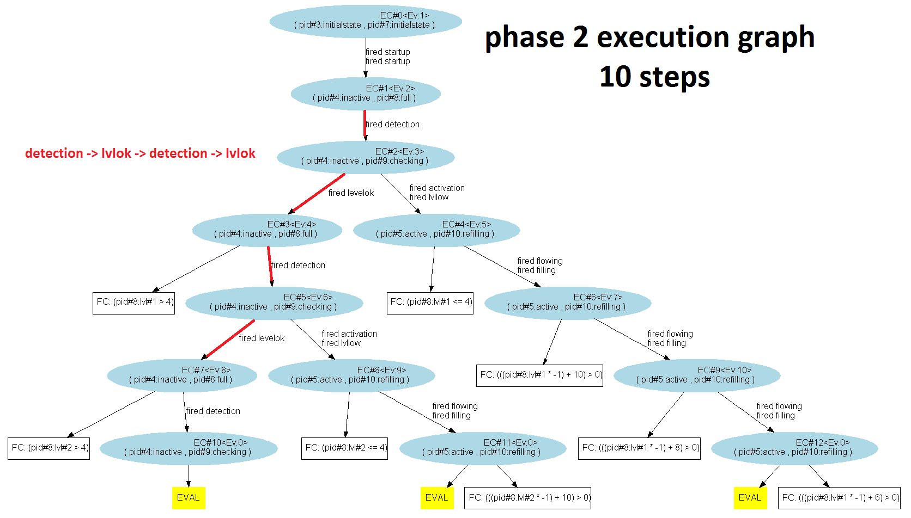 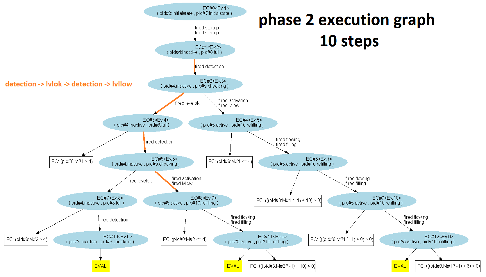 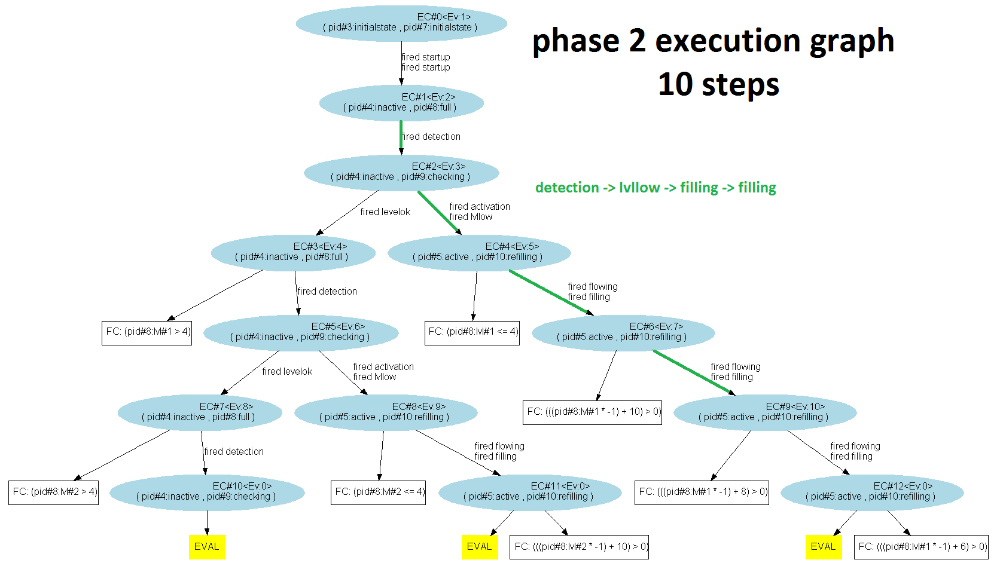The only sequence that we didn't get is :
In the next part, we will use "Behavior Selection" to try to isolate this particular sequence. As we'll see, this sequence is not possible considering the variables of our system.